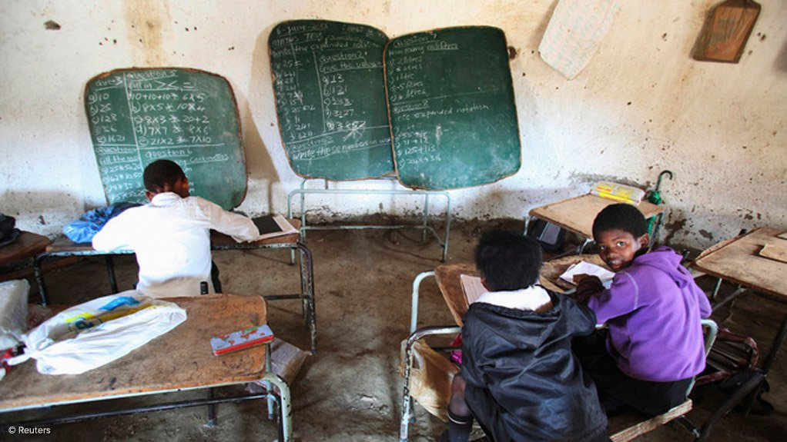
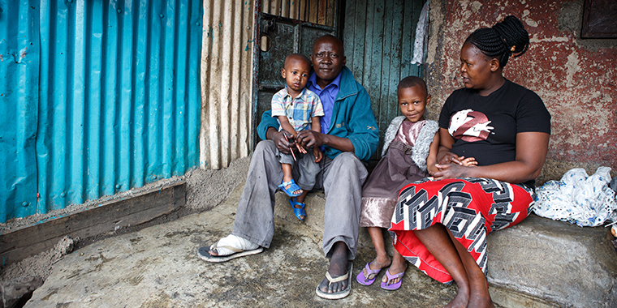

📸 Visual Stories of Digital Inequality
Click on any image to explore the full story behind digital divide challenges and solutions

📱 The Digital Divide Gap
3 billion people still lack internet access worldwide

🏞️ Rural Connectivity Crisis
Rural communities face 2x less broadband access

🎓 Education Technology Gap
20% fewer students pursue higher education without internet

📚 Digital Learning Barriers
Millions of students left behind without devices

💰 Poverty & Digital Exclusion
10% of income spent on internet for low-income families

💸 Economic Inequality Online
Digital economy leaves the poor further behind

🏠 Low-Income Digital Barriers
Affordability remains the biggest obstacle to access

🤝 Community Digital Solutions
Public hotspots and centers bridge connectivity gaps

🌆 Rural vs Urban Divide
Infrastructure gap widens between cities and countryside

📡 Infrastructure Inequality
High-speed internet vs basic connectivity

🌉 Bridging the Connectivity Gap
Expanding broadband to underserved communities

🌍 Developed World Access
Global digital inequality between nations

✨ Digital Privilege
Access to high-speed internet and modern devices

🏙️ Technology in Urban Centers
Abundant resources in well-connected areas

📈 Digital Prosperity
Opportunities enabled by digital access

🚀 The Digital Future
Imagining a world with equal digital access